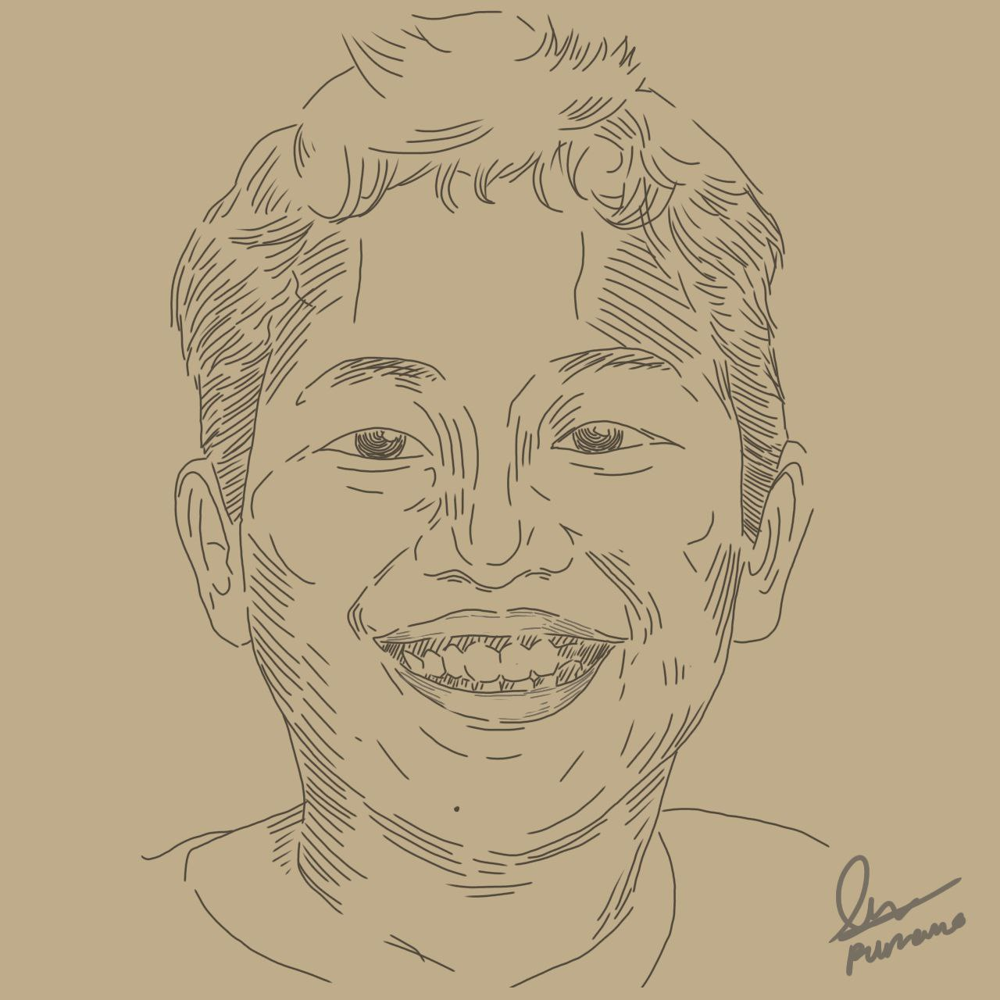

Dalam Hal ini yang paling memalukan adalah "sangkin rindunya gw sama dia dan krna chat gw diblok, jalan satu"nya yg gw lakuin adalah: ngirim chat ke maknya(bnyk bgt) & apesnya diblok jg😅. ya ampun gw gk habis fikir, Mana ngomel2 gak jelas lagi tu gw. Sumpah Sok sokan jd detektif ceritanya mncoba mnerka2 pikirannya. Ya emg waktu itu gw lg demen2nya nonton anime jdnya ikut terbawa2 dah tuh. Parrraaah. Sampe skrg masih kebayang klo ketemu emak dia😂gw dah kek org sakit jiwa. Damn!
"Wajar aja dia sempet ngatain gw gila wkwk"
Ada banyak juga kebetulan2 lain yg pastinya bakal ku ceritain disini.
Misalnya tahun2 kemarin tuh Jd gini, hari udh malem gw lagi pngen ktemu dia saat itu jg detik itu jg(maksa bgt dah), trs gw panjatkan doa kpd tuhan dgn pnuh pnghayatan, gw coba keluar rumah kejalan depan brharap ketemu, ehmalah beneran ketemu dia...😂. Lgsg dah tuh gw tahan tangan tu anak ketembok biar gak kabur tp sangkin kasian liatnya gw kyk org bego, bingung mau ngomong apa didepan dia, yg gw lakuin cuma nahanin tangan dia terus. Dalem ati ngerasa "gw cuma pngin sama lu dalam waktu yg lama seenggakny 1jam" Krna keadaan saat itu dia gprnh lg dateng ke gw... God Thanks for that gift
Masih ada lagi,,, Suatu hari dimalam yg sangat tenang gw suka duduk dibelakang rumah sambil merhatiin bulan&bintang, gw hampir nangis sangkin rindunya( lu boleh bilang gw cengeng dah ). gw berdo'a lagi dan bilang "angin sampaikan rinduku padanya'". Esoknya gw ngerasa kesepian bgt, gw butuh org yg kaya dia, didatenginlah sm tuhan sodara kecil gw dr kampung. Dan anehnya setiap ku jauh dgnnya selalu aja sodara kecil gw itu yg kesini(mungkin gampangnya sebagai alternatif/pengganti)wkwk soalnya ada mirip2nya dari segi sifat. yg bikin gw bingung udh 2x kejadian lho. kek rasanya tuh klo gw *maaf jd tuhan gw kaya lg bilang "sementara emg gaboleh, lu sama si ini dulu". Intinya gw ngerasa bahwa itu ujian/pembelajaran buat gw utk ttp sabar.Gak lama kmudian sodara kcil gw pulkam, didatengin dah tuh si dia, iya sidia, gw lupa kenapa dia bsa mau lg main sm gw. Keknya sebab gw ngemis2 chat dgn video2 anime editan jdagjdug itu sama bilang "jgn blokir dulu, inilah alasan gw suka kau blablabla" dan yaaa dia lumayan tertarik. Hubungan semakin menghangat Trus gw dikenalin sm seorang anak sm dia namanya F, gw pikir... dia mgkin lg nyariin gw penggantinya buat gw wkekkkk. Pdhl gimanapun fisik/pemikirannya gw tetep setia sm lu. Saat itu dia kaya lg ngetes2 kepribadian gw ngandalin temen barunya td. Dan bener aja, disela2 obrolan chat kek ada yg janggal sampe gw jelasin knp gw orgnya bgini bgono. So gw kasih paham dahtuh beres jg. Akhirnya berlanjut ke pertemuan reallife dan kita bisa main lagi sprti dulu. Foto2 jalan2.ds
Ditengah2 perjalanan kisah, Lalu bam!!! Ada problem lg shingga gw pisah utk kdua kalinya. Fase rindupun masih terus berlanjut...Lanjutannya muterin lagu dari Vagetoz - Jauh. Dengerin sambil berkendara, ngebut dah... Ada juga Peterpan, Nidji, Nike Ardilla(Kelam,GarisNasib,Izinkanlah.dst) bsa dibilang paling banyak lagu2nya Nike Ardilla karena relate bgt saat itu, full album wkwk.(Dasar Bucin!)